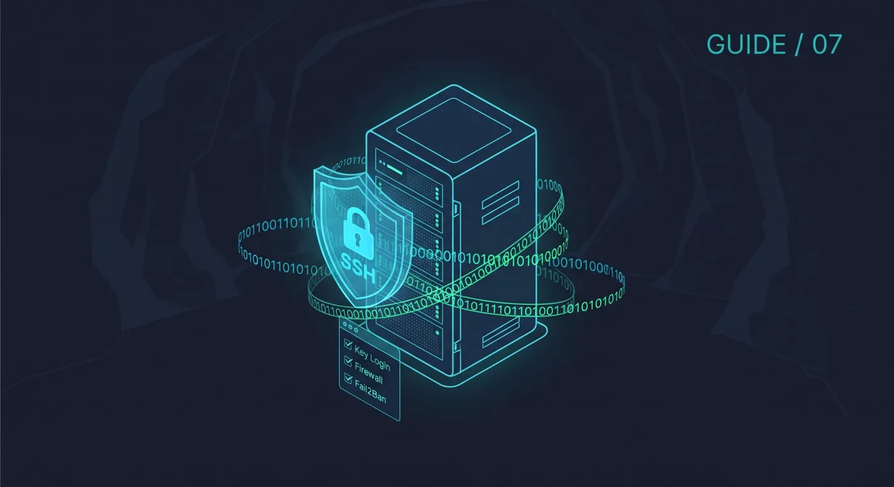
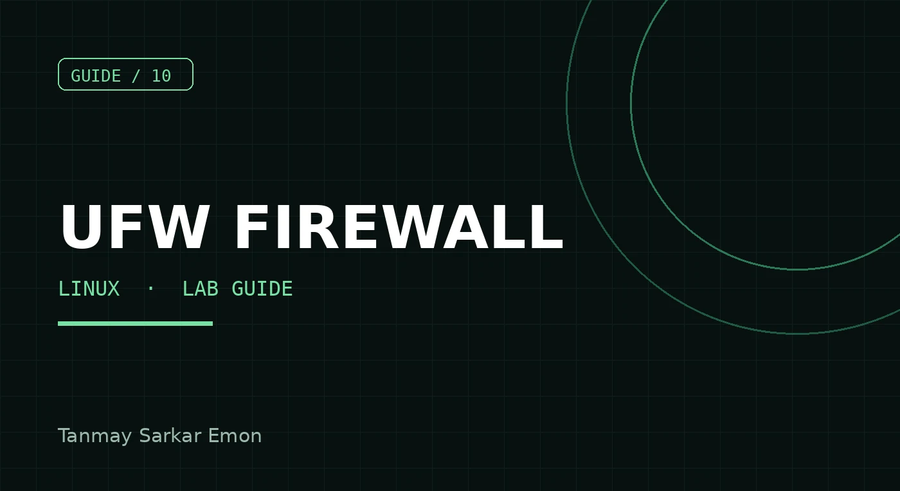
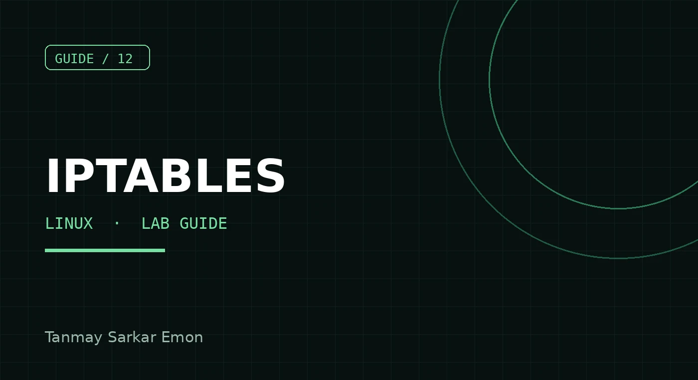
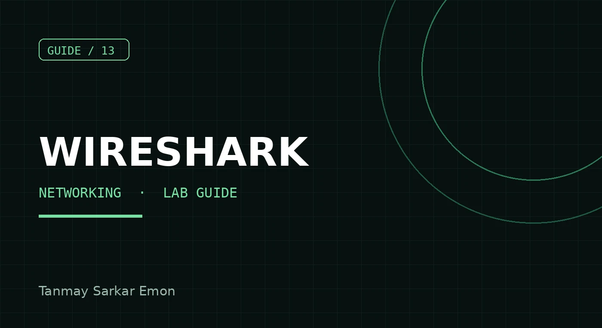
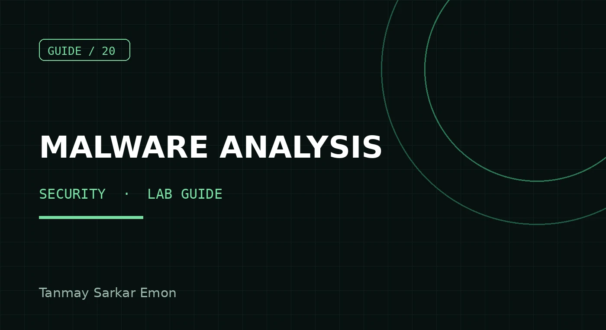
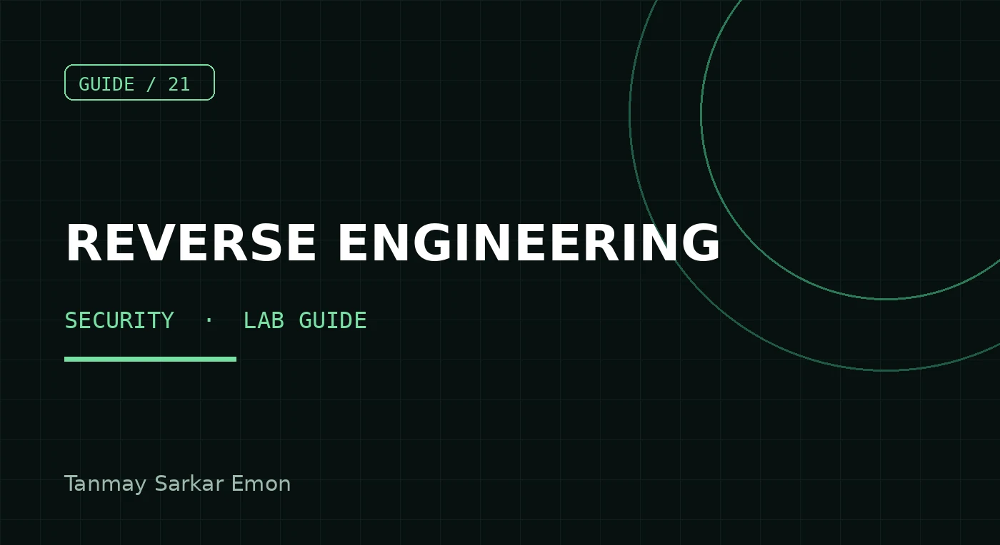
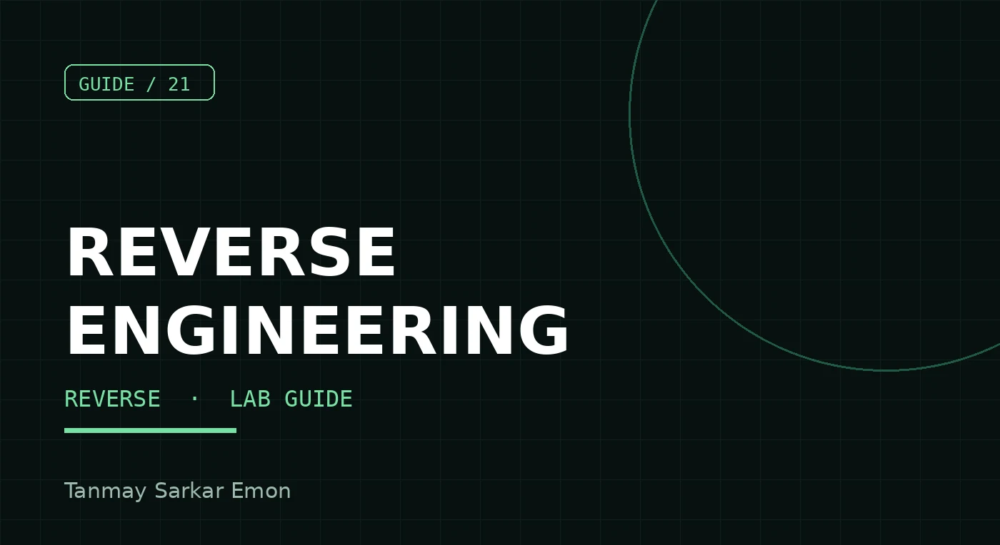

Learning in public.
Practical guides and reflections from the cybersecurity student journey: networking labs, Linux security and study systems. Each article links to the matching guide on Gumroad.

GUIDE / 01

GUIDE / 02
Beginner’s Guide to Linux Server Hardening & Fail2ban
Read article
STORY / 03
My Journey as a Cybersecurity Student at APU Malaysia
Read article
GUIDE / 04
Nmap Basics: Scanning Your Own Lab Network
How I set up Fail2ban on a Rocky Linux lab server, attacked it from my own Ubuntu client and watched it ban me.
Read article
GUIDE / 05
VLANs Explained with Cisco Commands
How I split a four-site Packet Tracer network into VLANs, with the access, trunk and native VLAN commands and the mistakes I made.
Read article
GUIDE / 06
OSPF Single-Area Configuration in Packet Tracer
Using OSPF area 0 to connect a headquarters and three branches in Packet Tracer, with the verification commands and the link errors I fixed.
Read article
GUIDE / 07
SSH Hardening Checklist for a New Linux Server
Key login, no root access, firewall and Fail2ban in a short checklist.
Read article
GUIDE / 08
HSRP and EtherChannel: Redundancy Basics
How I used LACP EtherChannel and HSRP version 2 to remove single points of failure in a four-site Packet Tracer network.
Read article
GUIDE / 09
How I Plan a Semester of Labs and Projects
A simple weekly system for tracking labs, deadlines and project checklists.
Read article
GUIDE / 10
UFW Firewall Basics for Ubuntu
Block everything by default and open only the ports your server needs.
Read article
GUIDE / 11
Linux File Permissions Explained
Read, write and execute for owner, group and others, with chmod and chown.
Read article
GUIDE / 12
iptables Basics: Rules, Chains and Saving
Understand chains, add a few safe rules, and keep them after reboot.
Read article
GUIDE / 13
Wireshark Packet Capture Basics
Capture traffic in your lab and use display filters to find what you need.
Read article
GUIDE / 14
DHCP and DNS in Cisco Packet Tracer
One DHCP server for ten VLANs using helper addresses, plus a DNS server and records, built in Packet Tracer for a four-site network.
Read article
GUIDE / 15
Cisco ACL Basics: Standard and Extended
Permit or deny traffic on a router, with rules you can read and test.
Read article
GUIDE / 16
Python Socket Client and Server Example
A tiny TCP echo server and client to learn how network programs talk.
Read article
GUIDE / 17
Reading Linux Logs: journalctl and auth.log
Find failed logins and service errors on your own server.
Read article
GUIDE / 18
Linux Users, Groups and sudo for Beginners
Create a normal user, add it to a group and give limited admin rights.
Read article
GUIDE / 19
Cisco Port Security Basics
Port security, DHCP snooping, Dynamic ARP Inspection and native VLAN settings on access switches, with the verification output from my Packet Tracer lab.
Read article
GUIDE / 20
Malware Analysis Basics: A Safe Lab Setup
Set up an isolated VM, inspect a suspicious file safely, and write a clear report.
Read article
GUIDE / 21
Reverse Engineering Basics: Your First Steps
Learn what a binary is, read it with simple tools, and try your own programs first.
Read article
GUIDE / 21
Reverse Engineering Basics on Linux
Read a compiled program with file, strings, objdump, ltrace and gdb, using your own practice file.
Read articleGUIDE / 23
Setting Up a BIND9 DNS Server on Rocky Linux (Forward and Reverse Zones)
A lab walkthrough of BIND9 on Rocky Linux with forward and reverse zones, including the reverse zone file that refused to load.
Read articleGUIDE / 24
Postfix and Dovecot Mail Server: 7 Problems I Hit and How I Fixed Them
Setting up Postfix and Dovecot on Rocky Linux was easy. Getting Thunderbird to send mail was not. Here are the real errors and fixes.
Read articleGUIDE / 25
Apache Virtual Hosts with a Self-Signed SSL Certificate and HTTP Redirect
Two websites on one Apache server, HTTPS with a self-signed certificate, and why Firefox still said Not Secure after curl said it was fine.
Read articleGUIDE / 26
NAT Overload and a Floating Default Route for Backup Internet in Packet Tracer
Primary and backup internet exits with PAT and a floating static route, built and tested in Packet Tracer, plus the mistakes I made.
Read article